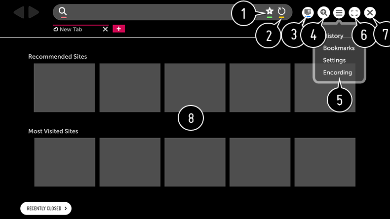

Uso del Navegador web
Puede introducir el sitio web escribiendo la dirección web en la barra de direcciones URL.
Si introduce una palabra de búsqueda, buscará información sobre la palabra en cuestión según el motor de búsqueda.
Si introduce una palabra de búsqueda, buscará información sobre la palabra en cuestión según el motor de búsqueda.
-
Pulse el botón
 del mando a distancia.
del mando a distancia.
- Ejecute la aplicación Navegador web.

- Puede añadir o eliminar la página actual en Marcadores.
- Vuelve a cargar la página actual.
- Puede encender / apagar la Mini TV.
- Permite aumentar o reducir la pantalla.
-
Historial
:
Puede abrir o eliminar la lista de historiales.
Marcadores : Puede abrir o eliminar la lista de favoritos.
Configuración : Puede configurar los ajustes básicos del navegador.
Codificación : Puede cambiar el idioma si el contenido no se muestra correctamente en la página web. -
Puede usar el navegador en modo de pantalla completa.
Para volver a la pantalla original, utilizar el mando a distancia para mover el puntero a la parte superior de la pantalla. Aparecerá Desactivar Pantalla Completa. - Salga de Navegador web.
-
Sitios recomendados y Sitios Más Visitados aparecen en una nueva pestaña.
Es posible que Sitios recomendados no esté disponible en su país.
Para ocultar Sitios recomendados, seleccione Apagado en Configuración.
Navegador web sólo es compatible con los medios HTML5 y no admite los complementos flash.
Navegador web no es compatible con la instalación de complementos.
En Navegador web, es posible que no se puedan reproducir archivos de medios con formatos que no sean los siguientes:
: JPEG / PNG / GIF
: JPEG / PNG / GIF
Navegador web podría cerrarse si hay un espacio de memoria insuficiente.
En Navegador web, sólo se utilizan las fuentes integradas en la TV. Por lo tanto, el texto se puede mostrar con fuentes distintas a las del PC.
Navegador web no admite la descarga de archivos y fuentes.
Dado que Navegador web es un explorador de TV, puede funcionar de forma distinta a los exploradores de PC.
Además, puede que determinados contenidos no se reproduzcan correctamente en Navegador web.
Haga un uso responsable del producto cuando se utilice con menores. A través de este producto, es posible acceder a contenido no apto para menores.
Puede bloquear contenidos en línea inadecuados restringiendo el acceso a algunas aplicaciones.
Configure los ajustes en
 Seguridad Bloqueo de aplicación.
Seguridad Bloqueo de aplicación.
Puede bloquear contenidos en línea inadecuados restringiendo el acceso a algunas aplicaciones.
Configure los ajustes en
Seguridad Bloqueo de aplicación.
Para resolver cualquier problema relacionado con esta función, consulte la sección Resolución de problemas de la Guía del usuario.
Configuración del Navegador web
Pulse en la parte superior de la pantalla y seleccione Configuración.
- Al Iniciar
- Puede establecer la página de inicio del navegador en Abrir la página Nueva pestaña / Continuar como lo dejé todo antes de cerrar / Página de inicio:.
- Motores De Búsqueda
-
Puede seleccionar el motor de búsqueda predeterminado.
Los ajustes del motor de búsqueda están sujetos a cambios sin previo aviso en función de las circunstancias del proveedor.
- Sitios recomendados
- Puede cambiar los ajustes para que se muestre Sitios recomendados.
- Mostrar Siempre La Barra De Marcadores
- Puede cambiar los ajustes para que siempre se muestre la barra Marcadores.
- Navegación Privada
- Puede configurar los ajustes para no dejar rastros de sus búsquedas.
- Filtrado de sitios
-
Sitios Permitidos
:
puede configurar los ajustes para que solo se puedan abrir las páginas web registradas previamente.
Sitios Bloqueados : puede configurar los ajustes para bloquear sitios web específicos.Para utilizar la función Filtrado de sitios, necesitará introducir la contraseña de la TV.
La clave predeterminada es “0000”.
Cuando se selecciona Francia o Noruega como País, la contraseña no es “0000” sino “1234”. - Bloqueador de ventanas emergentes
- Puede bloquear las ventanas emergentes mediante los ajustes.
- No realizar seguimiento
- Puede solicitar que no se registre su historial de visitas en el servidor.
- Streaming adaptable usando JavaScript
- Si se establece en Apagado, la resolución de los vídeos reproducidos en Navegador web se limita a 720p.